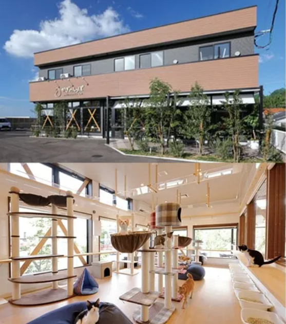
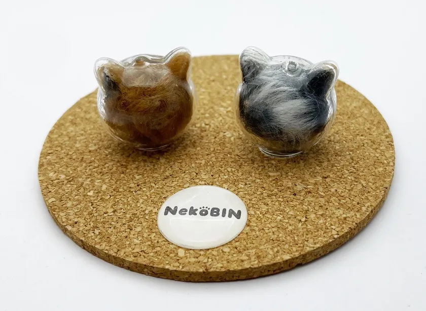

Social Impact
「ひとつの思い出が、もうひとつの命を支える。」
NekoBINは、愛するペットとの想い出を形に残すだけでなく、
新しい家族を待つ保護猫たちの未来を支援する取り組みを行っています。
Current Reality
依然として多い、猫の殺処分
環境省のデータによると、令和5年度（2023年度）の日本全国での猫の殺処分数は6,899頭にのぼります。
ボランティア団体や保護活動家の尽力により、ピーク時に比べて大きく減少しているものの、多頭飼育崩壊や無計画な繁殖など新たな課題も発生しており、「ゼロ」への道のりはまだ半ばです。
特に猫の殺処分数は犬の3倍以上となっており、その多くが離乳前の子猫です。
※ 出典：環境省「犬・猫の引取り及び負傷動物等の収容並びに処分の状況（令和5年度）」
令和5年度 猫の殺処分数
Our Action

保護猫カフェとの提携
NekoBINは、大分県内で保護猫カフェを運営する団体（株式会社CFC様等）と提携しています。
保護活動の最前線で命と向き合う現場を、商品を通じた寄付と連携によって持続的に支援しています。
新しい里親への「想い出」のプレゼント
保護猫カフェから新しい家族として猫を迎え入れた里親様へ、NekoBINの「ディスプレイタイプ」をプレゼントする取り組みを行っています。
初めてのブラッシングの毛を詰めてもらうことで、「保護猫」から「うちの子」になった記念と絆を、美しい形で残すお手伝いをしています。
